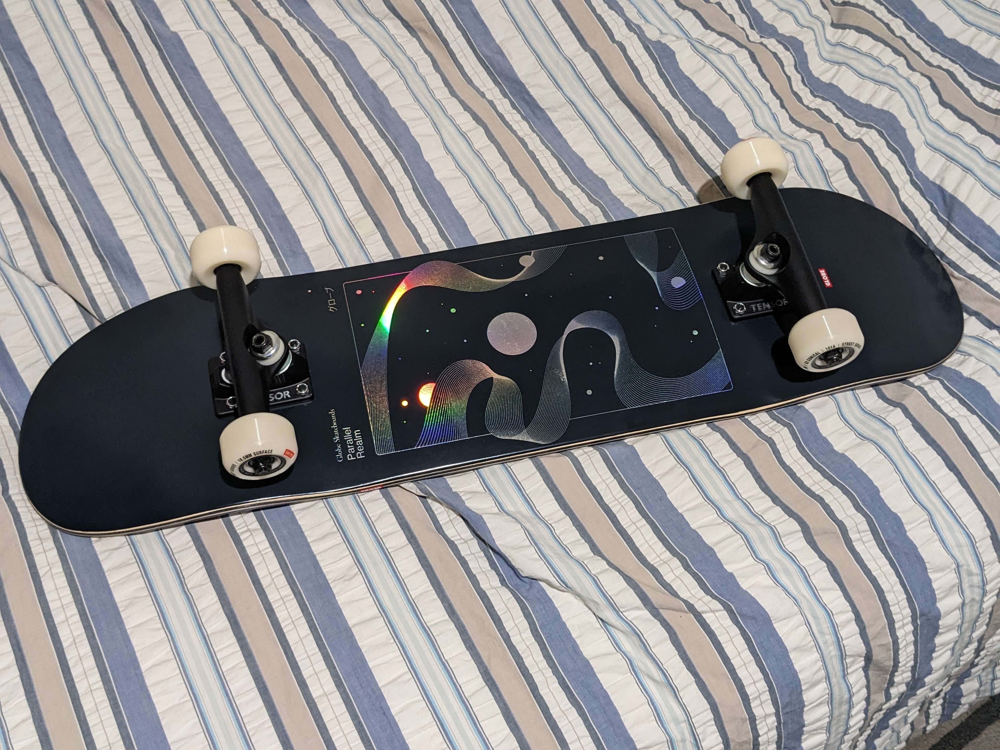

Since I now have an income, this month I'm moving into the city. I'm renting a cute little apartment, it's really cozy and it has its own private bathroom and everything. It even has a loft!! Unfortunately the kitchenette doesn't have a stove top and they don't allow tenants to bring in their own, but they do allow rice cookers and air fryers, so I don't need to use the shared kitchen. It'll be nice to have my own domain. It's also relatively affordable (with a strong emphasis on relatively); considering what it offers, $470 per month with bills included is a bit cheaper than many of the other places I've seen, especially since it's also less than a 5 minute walk from USYD.
I also finally got around to getting a skateboard.

今回はここまで！